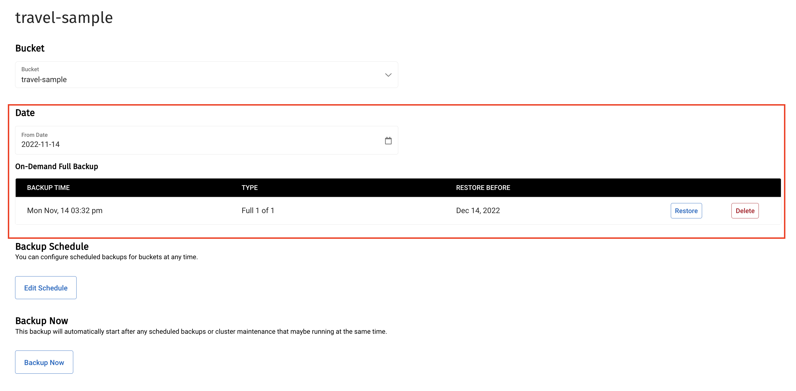

Manage Backups
Backups contain bucket data. You can take a backup on-demand or use a configurable automatic schedule.
Use the procedures on this page to create on-demand backups, schedule automatic backups, and manage backups. To learn more about how backups work in Couchbase Capella, see Backup and Restore Data.
View and Manage Backups
|
Permissions Required
To view and manage backups in the Capella UI:
|
| Backup options are unavailable to free trial clusters. |
Accessing Database Backups in the Capella UI
You can access a database’s backups from the Backup page.
-
Open the Backup page for your database:
-
With the Projects tab in your organization open, click the project with the database you want to work with.
-
With the Databases tab open, select your database.
-
Click the Backup tab.
-
Backup Summary
A database’s Backups page shows a summary of the latest backups per bucket that exist for the database. You can sort the backup information by bucket name.
Each bucket includes the following information about its most recent backup:
| Field | Description |
|---|---|
Bucket Name |
The name of the bucket. |
Latest Backup |
The last time there was a backup of the bucket, the backup type, the backup size, and how long it took. |
Items |
The number of items in the backup. |
Tombstones |
The number of tombstones, or records for removed items, in the backup. This number includes tombstones for deleted documents and any dropped collections. |
GSI |
The number of Global Secondary Indexes (GSI) in the backup. |
FTS |
The number of Full Test Search (FTS) indexes in the backup. |
CBAS |
The number of indexes for the Couchbase Analytics Service (CBAS) in the backup. |
Event |
The number of eventing functions in the backup. |
Expires On |
The date the backup expires and is deleted. |
Configure Scheduled Backups
You can configure scheduled backups for buckets at any time. When you set a backup schedule, the bucket automatically backs up the bucket based on the chosen schedule.
Couchbase recommends that you change each bucket’s Backup Schedule according to your Recovery Time Objective (RTO) and Recovery Point Objective (RPO). For example, buckets in production databases might require a much smaller backup window and a much longer backup retention time period than buckets in development databases.
You can edit a bucket’s backup schedule when modifying a bucket or from the Backup page for your database.
To change a bucket’s backup schedule from the Backup page:
-
Open the Backup page for your database:
-
With the Projects tab in your organization open, click the project with the database you want to work with.
-
With the Databases tab open, select your database.
-
Click the Backup tab.
-
-
Select the bucket you want to change.
-
Click Edit Schedule.
-
If it’s not already selected, use the Bucket list to choose the bucket you want to change.
Using the Bucket list, you can select multiple buckets to bulk edit backup schedules. -
Choose a backup schedule for the bucket according to the relative importance of the workload and data.
-
Select Do Not Backup to not schedule any backups.
Do Not Backup is not recommended for production databases. It’s intended for development databases or similar. To set a weekly incremental schedule, see the steps which follow.
-
Choose Set Weekly Schedule.
-
Choose the Day of the week when you want Capella to take the full backup. The default value is
Sunday. -
Set the Start at time of day for the full backup.
Select a Start at time when your application isn’t using Capella heavily unless you’ve chosen a database configuration with more capacity than you need.
-
Use the Incremental Every list to set the frequency of incremental backups.
If you change the Start at time, the next incremental backup might happen at a different time than you expect. Capella calculates the Incremental Value backward from the configured Start at time.
For example, Incremental Every is
8 hours, and the Start at time is 4 AM. If the current time is 9 PM, Capella takes an incremental backup at 8 PM, an eight-hour interval backward from 4 AM. If you change the Start at to 6 AM, you would see another incremental backup at 10 PM, two hours after the last backup. The backup occurs at this time because Capella recalculates the eight-hour backup interval back from the new 6 AM Start at time. -
Select Cost Optimized Retention. When selected, the cost optimized retention policy applies to your bucket backup. For more information, see Cost Optimized Retention Policy.
-
Set a Retention Time in line with your data retention policy.
If you selected Cost Optimized Retention, the Retention Time applies only to the monthly restore point.
Capella preserves each backup from
30 Daysto5 Years. After the retention time lapses, Capella schedules the backup for deletion.The Retention Time setting applies to all future backups for a bucket. Changes to this setting do not affect previous backups.
-
-
Click Apply.
The first automatic backup occurs at the next increment of the Incremental Every value, calculated backward from the configured Start at time.
Create an On-Demand Backup
| Capella keeps on-demand backups for 30 days. |
An on-demand backup of a bucket is always a Full backup. Capella schedules on-demand backup to start immediately.
-
Open the Backup page for your database:
-
With the Projects tab in your organization open, click the project with the database you want to work with.
-
With the Databases tab open, select your database.
-
Click the Backup tab.
-
-
Select the bucket you’re creating an on-demand backup for.
-
Click Backup Now.
-
Use the Bucket list to choose the buckets you want to back up.
-
Click Backup Now.
There can be a slight delay while Capella schedules the backup.
The Activity Log lists on-demand backup events. This includes when a backup was triggered, when it started, and when it finished.
The Backup page shows the details of a bucket’s backup when it’s done.
View Backup Details
You can view the details of a database backup by inspecting it in the Capella UI.
-
Open the Backup page for your database:
-
With the Projects tab in your organization open, click the project with the database you want to work with.
-
With the Databases tab open, select your database.
-
Click the Backup tab.
The Backup page shows the details of the most recent backup for each bucket in the database.
-
-
Select the bucket with the backups you want to view.
The bucket page lists recent backups grouped by the on-demand and scheduled backup types:
Each backup has the date and time it was created, the backup type, and the expiry time. A Scheduled backup also includes a number for the backup’s position in the backup series.
View Backups by Date
A bucket’s page shows backups for the current backup cycle. To view backups that belong to previous cycles:
-
Use the From Date date picker to select the start date for the backup cycle you want to view.
Choosing a new From Date automatically refreshes the page to show scheduled and on-demand backups based on this new date.
Delete a Backup
| Deleting a backup is a permanent action. |
When you delete a database, you also delete its bucket backups. When you delete a bucket, Capella keeps its backups until their configured retention time.
In Couchbase Capella, backups are deleted as follows:
- Manual deletion
-
You can manually delete a set of scheduled backups or individual manual backups. You can’t undo a backup deletion.
-
Open the Backup page for your database:
-
With the Projects tab in your organization open, click the project with the database you want to work with.
-
With the Databases tab open, select your database.
-
Click the Backup tab.
-
-
Select the bucket with the backups you are deleting.
-
Click Delete for the backup you want to delete.
If you’re deleting a scheduled series of backups, delete the most recent backup.
-
Confirm the backup deletion request.
-
Type
deleteinto the provided field. -
Click Delete Backup.
-
-
- Exceeding the retention time
-
If a backup’s age is greater than the retention time set in the Backup Schedule, Capella automatically deletes the backup.
- Deleting a database
-
If you delete a database with bucket backups, all the backups stored in the database are also deleted.